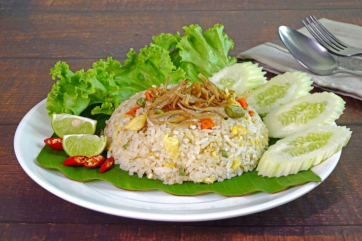
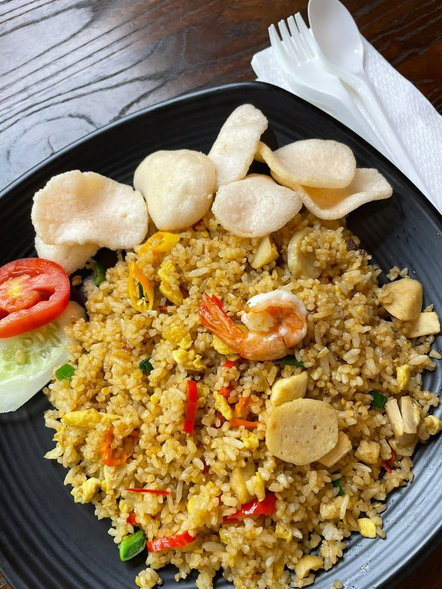
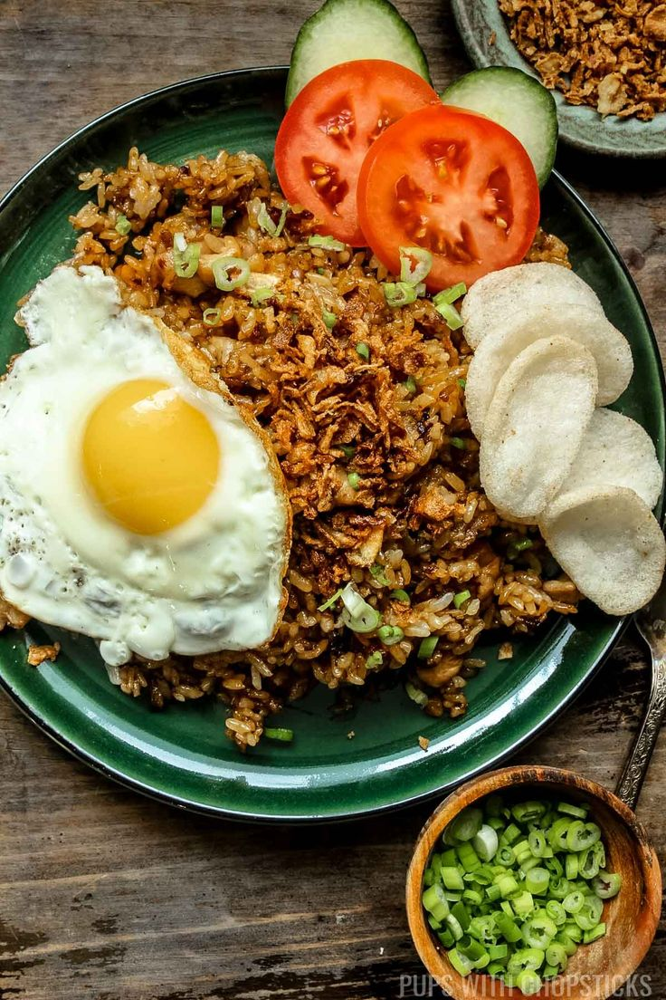

Mengenal Jenis-Jenis Nasi Goreng Khas Indonesia
Sebelum mulai memasak, sangat penting untuk mengenal berbagai variasi
nasi goreng yang ada di Nusantara. Berikut adalah beberapa jenis
nasi goreng yang paling populer dan digemari:

Nasi Goreng Kampung
Versi paling sederhana dan autentik dari nasi goreng Indonesia.
Dibuat dengan bumbu dasar bawang merah, bawang putih, dan cabai, disajikan bersama ikan teri goreng dan timun. Rasanya
ringan namun penuh kenangan rumahan.

Nasi Goreng Seafood
Pilihan favorit bagi pecinta hasil laut. Dimasak dengan tambahan
udang, dan cumi-cumi, memberikan cita rasa
gurih dan aroma laut yang khas. Cocok disajikan di restoran
maupun sebagai hidangan spesial di rumah.

Nasi Goreng Jawa
Ciri khasnya adalah penggunaan kecap manis yang melimpah sehingga
menghasilkan warna cokelat gelap yang menggoda. Biasanya
ditambahkan suwiran ayam, dan bawang goreng, serta
disajikan di atas piring daun pisang untuk kesan tradisional.
Manfaat dan Tips Memasak Nasi Goreng untuk Pemula
Memasak nasi goreng bukan hanya soal mencampur bahan, tetapi juga
sebuah seni. Dengan teknik yang tepat, nasi goreng buatan sendiri
bisa terasa seenak buatan restoran berbintang. Berikut tips
pentingnya:
Tips Agar Nasi Goreng Sempurna:
-
Gunakan Nasi Dingin/Sisa: Nasi yang baru dimasak
terlalu lembap dan akan menggumpal saat digoreng. Gunakan nasi
yang sudah didinginkan semalaman di kulkas agar butiran nasinya
terpisah sempurna.
-
Panaskan Wajan Hingga Benar-benar Panas: Kunci
nasi goreng yang enak adalah api besar dan wajan yang sangat panas.
Ini menghasilkan efek aroma smoky khas warung nasi
goreng yang autentik.
-
Masukkan Bumbu Secara Bertahap: Tumis bumbu halus
hingga harum terlebih dahulu sebelum memasukkan nasi. Jangan
terburu-buru agar bumbu benar-benar matang dan tidak langu.
-
Jangan Terlalu Banyak Mengaduk: Biarkan nasi
sedikit "menempel" di wajan sesaat agar terbentuk tekstur yang
sedikit crispy di bagian bawahnya, yang menambah kelezatan nasi
goreng Anda.